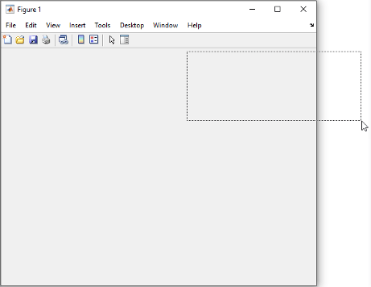

rbbox
Create rubberband box for area selection
Syntax
rbbox
rbbox(initialRect)
rbbox(initialRect,fixedPoint)
rbbox(initialRect,fixedPoint,stepSize)
finalRect = rbbox(...)
Description
rbbox initializes and tracks a rubberband box in
the current figure. It sets the initial box as a 0-by-0 pixel rectangle, anchors the box at
the figure's CurrentPoint, and begins tracking from this point.
rbbox(initialRect) specifies the initial
location and size of the rubberband box as [x y width height], where
x and y define the lower left corner, and
width and height define the size.
initialRect is in the units specified by the current figure's
Units property, and measured from the lower left corner of the figure
window. The corner of the box closest to the pointer position follows the pointer until
rbbox receives a button-up event.
rbbox(initialRect,fixedPoint) specifies the
corner of the box that remains fixed. All arguments are in the units specified by the current
figure's Units property, and measured from the lower left corner of the
figure window. fixedPoint is a two-element vector, [x
y]. The tracking point is the corner diagonally opposite the anchored corner defined
by fixedPoint.
rbbox(initialRect,fixedPoint,stepSize) specifies
how frequently the rubberband box is updated. When the tracking point exceeds
stepSize figure units, rbbox redraws the rubberband
box. The default stepsize is 1.
finalRect = rbbox(...) returns a four-element
vector, [x
y
width
height], where x and y are the
x and y components of the lower left corner of the
box, and width and height are the size of the
box.
Examples
Tips
rbbox is useful for defining and resizing a rectangular region:
For box definition,
initialRectis[x y 0 0], where(x,y)is the figure'sCurrentPoint.For box resizing,
initialRectdefines the rectangular region that you resize (e.g., a legend).fixedPointis the corner diagonally opposite the tracking point.
rbbox returns immediately if a button is not currently pressed.
Therefore, you use rbbox with waitforbuttonpress so
that the mouse button is down when rbbox is called.
rbbox returns when you release the mouse button.
Version History
Introduced before R2006aStarting in R2020b, if you begin dragging a rectangle using the
rbbox function and then move part of it past the edge of the figure
window, only the part of the rectangle that is inside the window is visible. In R2020a and
earlier releases, the whole rectangle is visible, even the part that is outside of the
figure window.
This change does not affect the values returned by rbbox.
This code and table compares the behavior of rbbox in R2020a and
R2020b.
waitforbuttonpress [finalRect] = rbbox
| R2020a | R2020b |
|---|---|

finalRect = 332 290 311 126 |
finalRect = 332 290 311 126 |

See Also
annotation | axis | dragrect | waitforbuttonpress | disableDefaultInteractivity